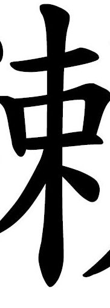
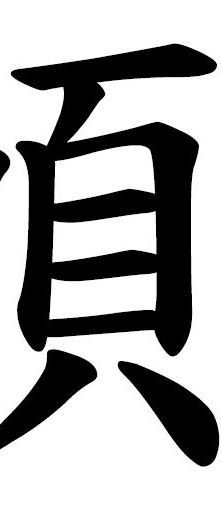
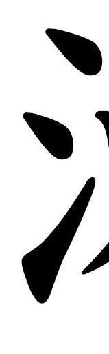

Das Geheimnis der chinesischen Schriftzeichen
Schon vor tausenden von Jahren begannen die Chinesen, ein Schriftzeichensystem aufzubauen das bis zum heutigen Tage das älteste Schriftzeichensystem der Welt, das noch benutzt wird, werden sollte.
Viele Geschichte und Mythen ranken sich darum, sodass sie für viele undurchschaubare Ansammlungen von Strichen sind. Manche wiederum sagen, man könne an jedem Zeichen ablesen, was es bedeute. Ob dies wohl stimmt? Wir können es herausfinden. Bist du bereit, dich der Herausforderung der chinesischen Zeichen zu stellen? Wir werden uns dieses Zeichen hier einmal genauer anschauen.

© Felix M. Krause
Hier eine Liste empfehlenswerter China-Restaurants in Köln
http://www.restaurant-beijing.de
https://www.facebook.com/Lai-de-hao-232288623509923/
© Felix M. Krause
Die Mitte
Schauen wir uns zuerst einmal die Mitte des Zeichens an. Dort ist ein Bestandteil, der zuerst einen waagerechten Strich im oberen Bereich hat. Darunter folgt eine Art Kasten, der breit, aber nicht so hoch ist. Dann geht ein langer, vertikaler Strich von oben nach unten, der schließlich mit zwei flügelartigen Strichen vervollständigt wird. Was könnte das sein?

© Felix M. Krause
Gehen wir von der Reispflanze aus.
Dann soll der mittlere Teil also die trocknende Reispflanze sein. Was könnte nun der rechte Teil sein? Hauptsächlich wieder ein großer Kasten, diesmal mit zwei Querstrichen darin. Darunter zwei Striche, die wie Füße aussehen. Darüber ein mittiger, sehr kurzer Strich, über dem ein Querstrich rankt

© Felix M. Krause
Der Reis und der Kasten.
Dann haben wir neben der Reispflanze also einen Kasten, der für Reis gedacht ist. Das ergibt ja schon einmal Sinn. Was ist aber jetzt dieser linke Teil mit seinen drei kurzen Strichen?

© Felix M. Krause
Der Reis und die Muschel.
Eine Reispflanze und eine Muschel, eine geniale Idee! Das kann doch gar nicht falsch sein. Jetzt geht es an den linken und letzten Teil mit seinen drei kurzen Strichen. Was das wohl ist?
© Felix M. Krause
Das Banner und der Kasten.
Ein Banner und ein Kasten? Vielleicht eine Truhe zum Transport auf den langen Märschen der Armeen? Was könnten die drei kurzen Striche dann sein, die den linken Teil ausmachen?
© Felix M. Krause
Das Banner und die Muschel.
Ein Banner und eine Muschel. Das könnte etwas mit der Marine zu tun haben. Vielleicht war die Muschel ja das Erkennungszeichen für die chinesische Marine im alten China?
Dann ist jawohl auch klar, was der linke Teil mit seinen drei kurzen Strichen bedeutet.
© Felix M. Krause
Der Reis, der Kasten und das Wasser.
Das Zeichen besteht also aus einer trocknenden Reispflanze, einem Kasten für Reis und Wasser. Könnte es das Zeichen für die traditionelle Reiszubereitungsmethode sein, nämlich in Wasser
quellend in einer Holzkiste? Nein, so wird das leider nicht gemacht. Stelle dich der Herausforderung noch einmal!
Ich stelle mich der Herausforderung noch einmal, auf zur Startseite!
© Felix M. Krause
Der Reis, der Kasten und nochmal der Reis
Eine Reispflanze, ein Kasten zur Reisaufbewahrung und nochmal Reiskörner. Da hast du aber sehr viel an Reis gedacht! Ist es etwa das Zeichen für einen Reisspeicher?
Ganz so oft kommt Reis dann doch nicht vor in den Schriftzeichen, auch wenn sie aus China kommen. Stelle dich der Herausforderung noch einmal!
Ich stelle mich der Herausforderung noch einmal, auf zur Startseite!
© Felix M. Krause
Der Reis, die Muschel und das Wasser
Eine Reispflanze, eine Muschel und Wasser soll es also sein. Glückwunsch, das ist tatsächlich richtig! Genauer gesagt stellt der mittlere und der rechte Teil einen Menschen dar, der
nur Reis und Muscheln hat, also sehr arm ist (der Teil rechts oben bedeutet "Mensch"). Ohne den linken Teil bedeutet das Zeichen "schwierige Lebenslage", "scharfe Lebenslage". Mit dem
linken Teil, der Wasser bedeutet, hat das Zeichen insgesamt die Bedeutung "Stromschnelle", also einen engen, schwer befahrbaren Teil eines Flusses.
Das war doch selbstverständlich. Was hätte man da denn falsch machen können? Auf zur Startseite, probieren wir es aus!
© Felix M. Krause
Der Reis, die Muschel und nochmal der Reis.
Hmm, lecker, gebratener Reis mit Muscheln, serviert auf gedämpften Reisstroh - dafür steht dieses Zeichen. Leider gibt es kein solches Gericht in der sehr vielfältigen, chinesischen
Küche, daher war diese Auswahl leider nicht korrekt. Stelle dich der Herausforderung noch einmal!
Ich stelle mich der Herausforderung noch einmal, auf zur Startseite!
© Felix M. Krause
Das Banner, der Kasten und das Wasser.
Ein Banner, ein Kasten und Wasser? Daraus lässt sich ja nicht einmal ein Kontrabass-Witz machen. Aber vielleicht braucht man einfach noch mehr Erfahrung in der unheimlichen und mystischen
Welt der chinesischen Zeichen. Die Auswahl war leider nicht korrekt. Stelle dich der Herausforderung noch einmal!
Ich stelle mich der Herausforderung noch einmal, auf zur Startseite!
© Felix M. Krause
Das Banner, der Kasten und der Reis.
Jetzt sieht es doch tatsächlich danach aus, als wäre dies das Zeichen für eine "militärische Transporttruhe" oder so etwas, die die bannerführenden Truppen mit sich führten und
in denen vor allem das Hauptnahrungsmittel Reis transportiert wurde. Leider gibt es dafür keine historischen Quellen, und die Auswahl war leider falsch. Stelle dich der Herausforderung
noch einmal!
Ich stelle mich der Herausforderung noch einmal, auf zur Startseite!
© Felix M. Krause
Das Banner, die Muschel und das Wasser.
Da ist die, die stolze kaiserliche chinesische Marine unter dem Muschelbanner, das Wind und Wasser (Regen) trotzt! Das ist die Bedeutung des Zeichens. Nur seltsam, dass die Marine in
China nie eine Muschel als Wappen hatte. Da ist bei der Auswahl wohl etwas schiefgegangen. Stelle dich der Herausforderung noch einmal!
Ich stelle mich der Herausforderung noch einmal, auf zur Startseite!
© Felix M. Krause
Das Banner, die Muschel und der Reis.
Die kaiserliche chinesische Marine, die den wichtigsten Rohstoff im Reich, nämlich den Reis, transportiert - das ist die Bedeutung des Zeichens! Seltsamerweise steht im Wörterbuch aber
ein anderes Zeichen für die Marine. Da muss bei der Auswahl wohl etwas schiefgelaufen sein. Stelle dich der Herausforderung noch einmal!
Ich stelle mich der Herausforderung noch einmal, auf zur Startseite!
© Felix M. Krause